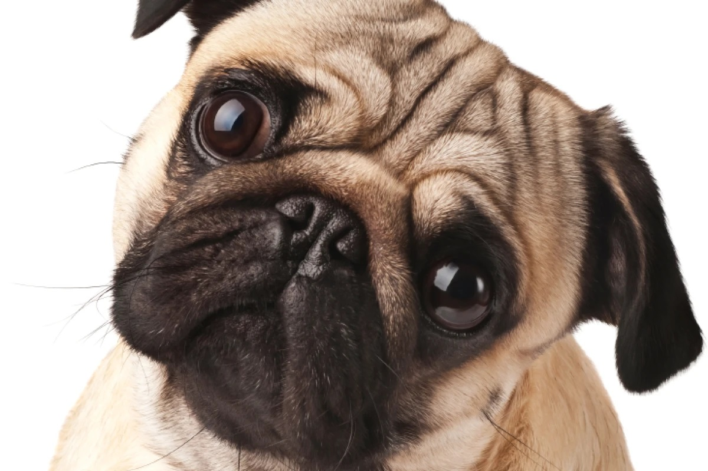

Um pequeno grande cachorro! O Pug é um cachorro extremamente amigável, convivendo muito bem com crianças e outros animais de estimação. Muito amoroso e apegado aos tutores, ele se contenta apenas com o fato de ser parte de uma família! Além disso, a aparência excêntrica o torna único. Seja pelo focinho achatado, seja pela cauda enroladinha, o Pug chama atenção de qualquer apaixonado por pet com facilidade. A seguir, você confere mais curiosidades sobre esse peludo!
O Pug não precisa gastar tanta energia, consequentemente, não é esportivo, mas aguenta bem a agitação das crianças. Essas características fazem a raça se adaptar muito bem a apartamentos ou casas com espaço limitado. Entretanto, quando adulto, ele tende a ganhar peso. Normalmente, é bem guloso e preguiçoso, podendo ficar por horas no colo dos tutores. Por isso, o ideal é estimular a prática de exercícios físicos leves, sempre com supervisão e controle rígido da dieta.
Por mais que seja um cachorro bem sociável, é importante introduzi-lo a outras pessoas e animais desde cedo. Assim, as chances do pet se tornar antissocial diminuem bastante. Por isso, leve o Pug filhote a parques, praças e outros locais movimentados. Essa raça de cães também é ideal para quem recebe muitas visitas, tem outros cães ou até outras espécies de animais em casa. Os Pugs são muito amigáveis, simpáticos e, geralmente, não apresentam traços de agressividade.
Fizemos um gráfico nivelando de 0 a 5 as características da raça, veja a baixo!
As dobrinhas dos Pugs, apesar de fofas, requerem cuidados frequentes para evitar sujeira e umidade. A limpeza regular com lenços especiais é crucial. Os banhos devem ser dados conforme necessário, sem exceder uma vez por semana. Devido à baixa capacidade aeróbica, é importante observar sinais de problemas respiratórios, como roncos, e manter os olhos do pet higienizados para prevenir a "doença dos olhos secos". Esses cuidados contribuem para a saúde e bem-estar do Pug.
As dobrinhas dos Pugs, apesar de fofas, requerem cuidados frequentes para evitar sujeira e umidade. A limpeza regular com lenços especiais é crucial. Os banhos devem ser dados conforme necessário, sem exceder uma vez por semana. Devido à baixa capacidade aeróbica, é importante observar sinais de problemas respiratórios, como roncos, e manter os olhos do pet higienizados para prevenir a "doença dos olhos secos". Esses cuidados contribuem para a saúde e bem-estar do Pug.
A primeira semana de vida dos pequenos consiste basicamente em cochilos e alimentação rotineira. Eles nascem cegos, surdos e sem dentes. Só abrem os olhos e escutam a partir da segunda semana de vida. Após esse período, é importante que a casa e os tutores estejam preparados para os pequenos. Afinal, eles entram em fase de aprendizado, precisando de muito carinho e atenção. Depois de ter lido nosso guia, você pode até saber tudo sobre o Pug, mas lembre-se de que as bolinhas de pelo ainda têm muito a aprender!